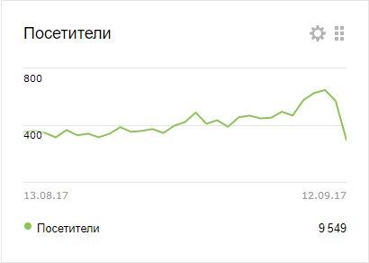
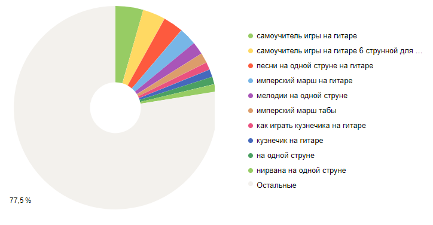

Уроки игры на гитаре
Здравствуйте! В этой рубрике я постараюсь собрать все свои уроки игры на гитаре для начинающих . По ним Вы сможете научиться играть с нуля , даже если совсем ничего не умеете.
Если вы левша, то предварительно советую прочитать эту статью: как играть левше на гитаре .
Интересное: как научиться играть на гитаре без гитары ?
Просьба не перескакивать по урокам. Поехали!
Раздел 1. Самые частые вопросы новичков
Урок №1. Сложно ли научиться играть на гитаре
Урок №2. Можно ли самому научиться играть на гитаре
Раздел 2. О гитаре
Урок №5. История создания гитары
Урок №6. Строение гитары
Урок №7. Правильная посадка при игре
Урок №8. Настройка гитары
Раздел 3. Обучение
Урок №9. Что такое аккорды, основные аккорды
Урок №10. Как зажимать аккорды
Урок №11. Три блатных аккорда на гитаре
Урок №12. Аккорд C
Урок №13. Аккорд G
Урок №14. Аккорд A
Урок №15. Как играть бой на гитаре
Урок №16. Бой Шестерка (6)
Урок №17. Разбор песни Перевал
Урок №18. Цоевский бой
Урок №19. Аккорд Em
Урок №20. Аккорд D
Урок №21. Аккорд H7
Урок №22. Кино - Звезда по имени Солнце
Урок №23. Кино - Когда твоя девушка больна
Урок №24. Кино - Пачка сигарет
Урок №25. Что такое баррэ
Урок №26. Аккорд F
Урок №27. Как играть перебором на гитаре
Урок №28. Простые переборы для начинающих
Урок №29. Техника игры на гитаре
Урок №30. Табулатуры для гитары
Урок №31. Мелодии на гитаре на одной струне
Урок №32. Разборы песен на гитаре
Раздел 4. Полезное
Урок №33. Информация о гитаре
Урок №34. Виртуозы игры на гитаре
Урок №35. Медиатор для гитары, виды медиаторов
Урок №36. Каподастр для гитары
Урок №37. О гитаре
Урок №38. Как поменять струны на гитаре
Мои уроки игры на гитаре привлекательны тем, что здесь ВСЕ написано ПОНЯТНЫМ языком, то есть не придется обращаться за дополнительной литературой и сидеть-думать, что значит то или иное слово.
Самое быстрое обучение игре на гитаре с нуля от Вячеслава Мясникова. Через 10 минут будете играть!
В первом разделе Вас ждут ответы на самые популярные вопросы новичков. Вы узнаете, легко или сложно учиться играть на гитаре, сколько времени это займет и каждый ли сможет научиться.
Во втором разделе Вы узнаете о строении гитары, правильной посадке при игре на гитаре и прочитаете историю возникновения и создания гитары. Мы также поговорим о настройке гитары. Прежде, чем играть на гитаре, нужно ее правильно настроить. Это можно сделать с помощью специальных инструментов, а можно сделать собственноручно.
Третий раздел - непосредственно обучение игре. Тут мы начинаем знакомиться с аккордами, боем, разучиваем свою первую песню на гитаре. Потом мы познакомимся с переборами. Чуть попозже стоит повысить свой уровень игры на гитаре, познакомившись с разной техникой игры (флажолеты, подтяжка, хаммер, легато, скольжение и другие). В конце рекомендую разучить табулатуры. После этого я специально подготовил раздел Разборов песен на гитаре - там Вы сможете найти мои разборы песен.
Последний раздел - информационный. Здесь Вы найдете разную полезную информацию о гитаре, о примочках и инструментах для гитары.
Популярность обучения по урокам
моему сайту чуть более полугода, но я уже наблюдаю, насколько популярно у новичков учиться основам гитары по урокам
посмотрите на количество посещений моего сайта за август-месяц

это не так много, конечно, но моему сайту всего полгода! Через год будет намного больше, думаю, что раз в 5.
Из этой статистики становится понятно, что уже давно посещение школы гитары перестало быть единственным способом хорошо научиться играть на гитаре. Невозможно даже представить, сколько людей обучаются играть на гитаре онлайн, потому что даже я знаю многих конкурентов, которые обучают играть на гитаре, при этом у них посещений в 5, а то и 10 раз больше, чем у меня. А ведь еще буквально 10 лет назад было не так много видео и курсов по обучению игре на гитаре, но сейчас все стало намного проще. В интернете много самоучителей и разных видео, где доходчиво и понятно разбирают популярные мелодии и песни.
давайте посмотрим, по каким запросам чаще всего заходят на сайт

11 сентября я создал страничку " Уроки игры на гитаре " и думаю, что она станет отличным подспорьем для моего самоучителя. В этой статье я постарался прямо-таки разложить все по полочкам.
Вы сами можете наблюдать, насколько популярно обучение гитаре по урокам...
Отсюда можно сделать несколько выводов:
- научиться играть на гитаре самому не трудно;
- уроки игры на гитаре действительно актуальны;
- основы гитары можно выучить без репетиторов и школ гитары.
Учитесь, пробуйте, играйте! А я постараюсь Вам максимально в этом помочь. Еще больше уроков вы найдете в моем разделе - Уроки игры для начинающих